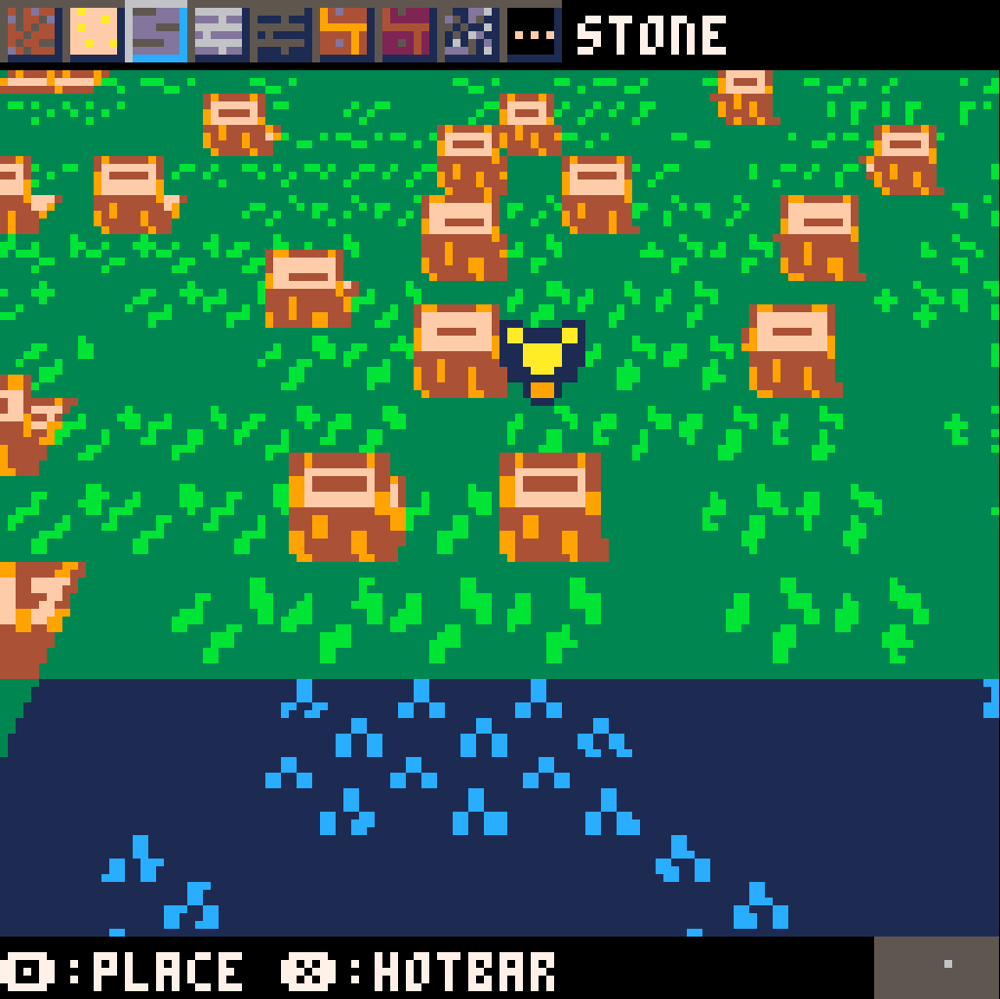
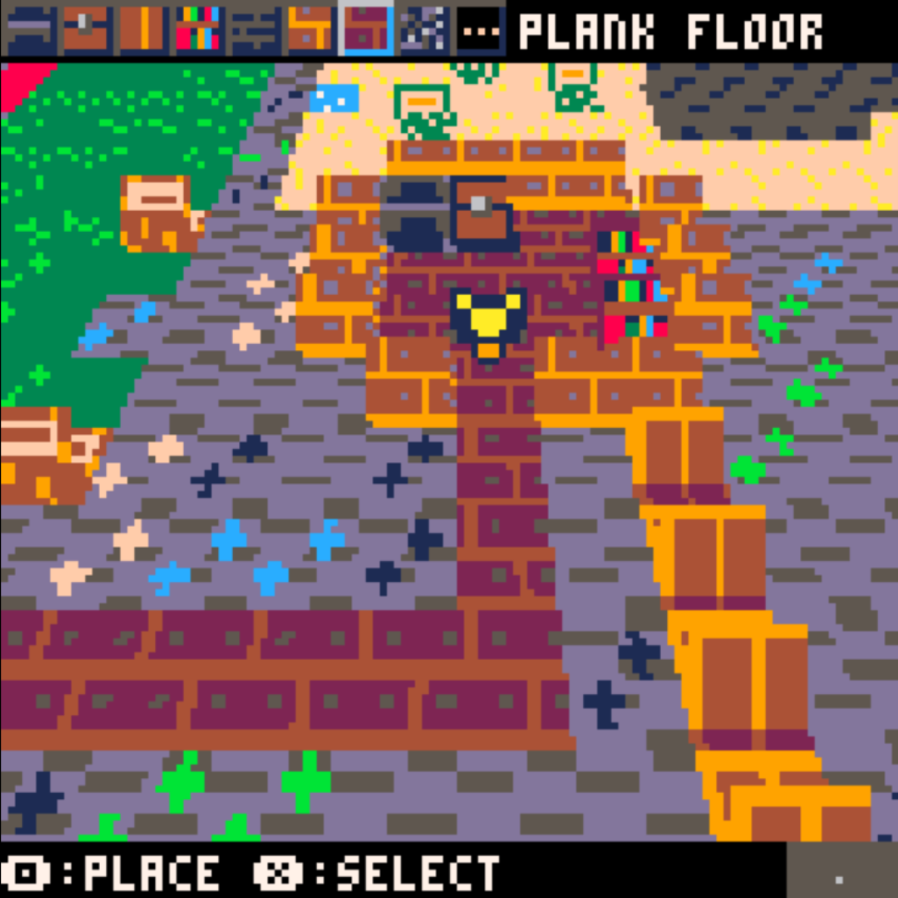

Badcraft 3D
Released: March 11, 2020
I thought it would be fun to make a game using Pico-8, since I've seen other games made with it, and it seemed pretty cool. I decided on making a very simple "Minecraft" "clone".
You can place blocks (there's around 40 to choose from!) in procedurally generated worlds.
The cool thing about Pico-8 is that you can play games made with it in your browser, too! It'll be on your right, or below if you're on mobile. You can play it with the arrow keys, Z, and X. Before you ask, no, you can't save.
Pico-8 is surprisingly simple and fun to make games for, so I might make another game with it in the future. I'd also love to make some sort of sequel to this game in Picotron.
How to play
The game is playable on this page, but you can also play in a separate tab instead.
Make sure Javascript is enabled!
You can also get the .png file from itch.io to open in your own copy of Pico-8! It's also playable in-browser there, in case you don't trust me enough to play it here (how could you not ;-; )
Controls
- Arrow Keys: Move
- X: (Press) Navigate hotbar/Cancel | (Hold) Strafe Mode
- Z: Place Block/Select
- Enter: Pause

